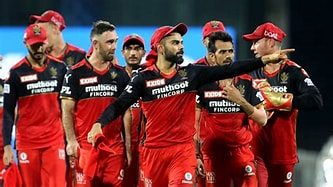

Royal Challengers Bangalore, also known as RCB, is the Bengaluru-based cricket franchise of the Indian Premier League (IPL). The team is owned by United Spirits Limited, a Diageo Group company. RCB rose from a bottom-two finish in 2008 to end as runners-up in 2009 and semi-finalists in 2010. The team had 3 good seasons back-to-back when they made it to the final in 2011. Led by Virat Kohli, Royal Challengers Bangalore yet again finished 2nd in 2016. But disappoint one in any one season IPL .The rcb not win the cup.
 @@